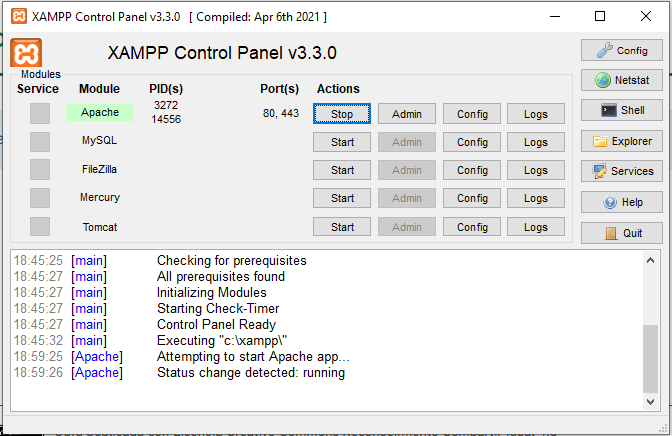
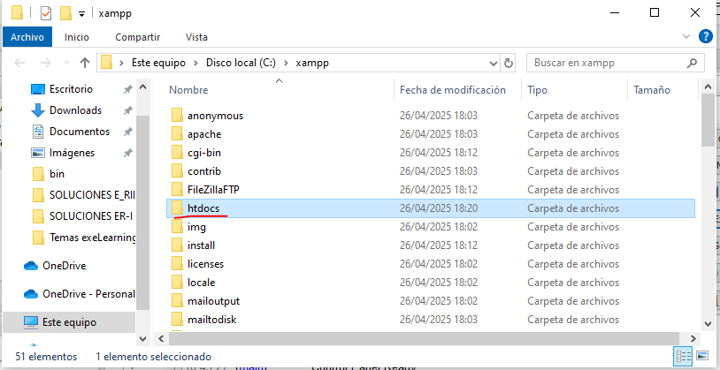
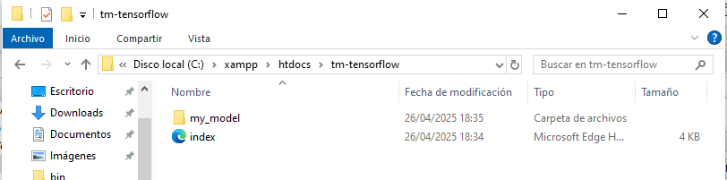
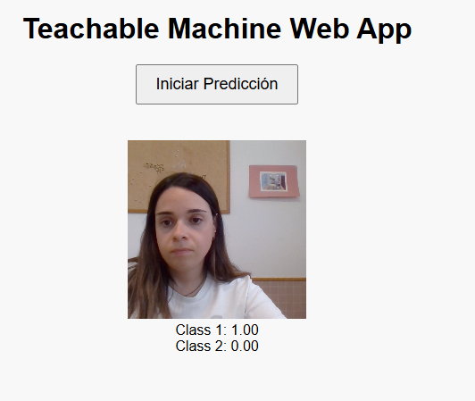
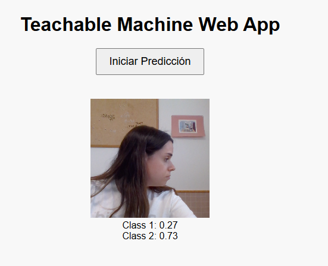

🚨 Muy importante para tu app con Teachable Machine:
Cuando trabajemos con archivos locales de modelos (.json, .bin) necesitaremos un servidor (aunque sea localhost) porque los navegadores:
- No permiten cargar archivos file:// directos por seguridad.
- No permiten acceso a la cámara en páginas abiertas como file://.
Con XAMPP, solucionamos todo eso.
Teniendo esto en cuenta, para integrarlo en una app real, el flujo básico sería:
- Subir el modelo (los .json y los .bin) a un servidor o almacenamiento online (o puedes guardarlo localmente en tu proyecto). Como ya hemos dicho, nosotros usaremos el servidor de Apache de XAMPP:

- Accede al explorador de archivos de XAMPP y busca la carpeta htdocs:

- Dentro de htdocs, crea una carpeta para tu proyecto. Para este ejemplo la llamaremos tm-tensorflow:

- Dentro de tm-tensorflow deberemos pegar la carpeta descargada desde Teachable Machine, que contiene el .json y el .bin.

- Además, en esa misma carpeta, deberemos añadir un index.HTML que embeba el código Javascript proporcionado también por la herramienta. Puedes usar este de ejemplo:
<!DOCTYPE html>
<html lang="es">
<head>
<meta charset="UTF-8">
<title>Teachable Machine con Webcam</title>
<!-- Librerías necesarias -->
<script src="https://cdn.jsdelivr.net/npm/@tensorflow/tfjs@latest/dist/tf.min.js"></script>
<script src="https://cdn.jsdelivr.net/npm/@teachablemachine/image@latest/dist/teachablemachine-image.min.js"></script>
<style>
body {
font-family: Arial, sans-serif;
text-align: center;
margin-top: 50px;
}
video {
margin-top: 20px;
border: 2px solid #ccc;
border-radius: 10px;
}
#start-button {
padding: 10px 20px;
font-size: 18px;
margin-bottom: 20px;
cursor: pointer;
}
#prediction {
margin-top: 20px;
font-size: 20px;
}
#webcam-container {
margin-top: 20px;
}
</style>
</head>
<body>
<h1>Teachable Machine Web App</h1>
<!-- Botón para iniciar -->
<button id="start-button" type="button" onclick="init()">Iniciar Predicción</button>
<div id="webcam-container"></div>
<div id="label-container"></div>
<script type="text/javascript">
const URL = "./my_model/"; // Asegúrate que esta sea la ruta correcta a tu modelo
let model, webcam, labelContainer, maxPredictions;
// Función para cargar el modelo y configurar la webcam
async function init() {
const modelURL = URL + "model.json";
const metadataURL = URL + "metadata.json";
// Cargar el modelo y los metadatos
model = await tmImage.load(modelURL, metadataURL);
maxPredictions = model.getTotalClasses();
// Configuración de la webcam
const flip = true; // voltear la cámara
webcam = new tmImage.Webcam(200, 200, flip); // Configurar webcam con un tamaño de 200x200
await webcam.setup(); // Solicitar acceso a la webcam
await webcam.play();
window.requestAnimationFrame(loop);
// Insertar el video de la cámara en el DOM
document.getElementById("webcam-container").appendChild(webcam.canvas);
// Preparar el contenedor para las predicciones
labelContainer = document.getElementById("label-container");
for (let i = 0; i < maxPredictions; i++) {
labelContainer.appendChild(document.createElement("div"));
}
}
// Función para predecir continuamente
async function loop() {
webcam.update(); // Actualizar el cuadro de la cámara
await predict();
window.requestAnimationFrame(loop);
}
// Función de predicción usando el modelo
async function predict() {
const prediction = await model.predict(webcam.canvas); // Ejecutar la predicción sobre el canvas de la cámara
for (let i = 0; i < maxPredictions; i++) {
const classPrediction = prediction[i].className + ": " + prediction[i].probability.toFixed(2);
labelContainer.childNodes[i].innerHTML = classPrediction; // Mostrar la predicción en el DOM
}
}
</script>
</body>
</html>
- Accede desde cualquier navegador a la url de tu servidor (localhost), dirígete a la ruta /tm-tensorflow y comprueba que la app funciona como esperamos.
http://localhost/tm-tensorflow/

